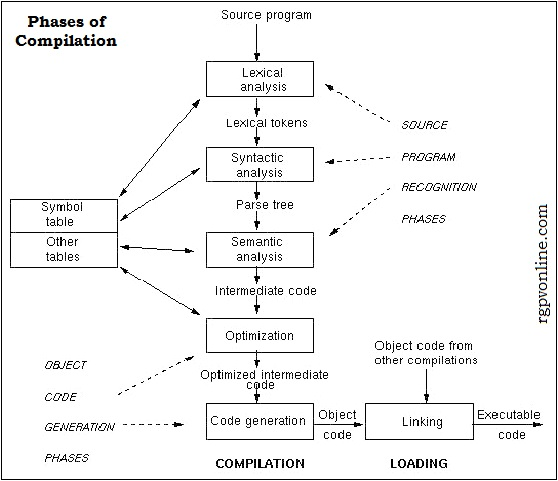

Q. 3: Explain in detail different stages in language translation.
Ans: language translation work done by compiler
Structure of Compiler: A compiler takes input as source program and produces as output an equivalence sequence of machine instructions.
The compilation process is divided into a series of sub process called phases. A phase is a logically cohesive operation that takes as input one representation of source program and produce as output i.e; target program in other representation.

Phases of Compilation:
1. First Phase: lexical analyzer or scanner separate character of source language into a group of logically belongs to each other. This group is called as tokens. The usual tokens are keywords such as do or if, identifiers such as a or b, operator symbol as = + < > and punctuation symbol as () and comma. The output is a stream of tokens pass to the rest of phases.
2. Second Phase: the syntax analyzer or parser group tokens together into syntactic structure for example 3 tokens as A+B group together into syntactic structure as expression. Expression might further be combined into statement. We form a tree who's leaf are tokens, an interior node represent string of token that logically belong together. for example : the statement - if(5 equ max) goto 100 has 8 tokens.
3. Third Phase: intermediate code generator use the structure produced by syntax analyzer to create a stream of simple instructions. Different style we are using like MACROS.
4. Fourth Phase: code optimization is an optional phase design to improve the intermediate code so that object program run faster and take less space. Its output is also intermediate code but it saves time.
5. Fifth Phase: the final phase at code generation produce the object code by deciding on memory location for data, selecting code and selecting register in which each computation done.
The table management or book keeping keeps track of the name and record and all the essential information about each of the data type. The data structure which is used to record the information called the symbol table.